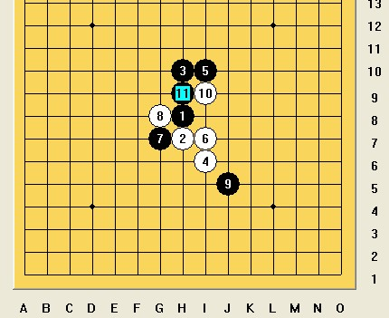
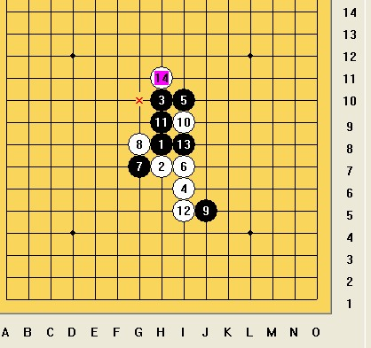
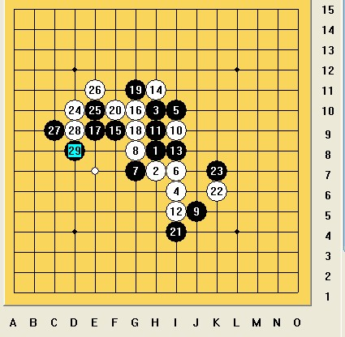
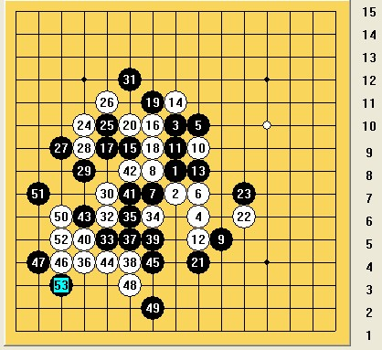
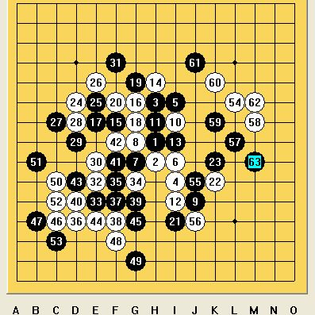

[棋局点评]严冬棋坛仍觉暖，江南迎春又见绿
#1 [棋局点评]严冬棋坛仍觉暖，江南迎春又见绿 作者：茗弈小刀 发表时间：2009-1-28 16:44:48
大年初二，还是在家呆在电脑边下棋，天很冷，烤着火吃着爸爸做的陈皮牛肉，也感觉比较安逸。群里没几个人，江南新绿老师还在，便和他寒暄几句，邀请他来下棋。

瑞星开局，新绿老师执黑。这个11我以前也比较喜欢下的，带有那么一点点骗的成分。而白12手皆处可战，我喜欢这个12.和14把黑棋上下都包裹着，黑不太好拓展。

新绿老师15手采取以防为攻的方式，最强手段。16手可以落子在12左边，我下了这个16，由于第一次和新绿老师下我选择保守的下法。17跳眠三逼迫我填中间的棋，19直接盖住白的眠三活二。哎，先手被他占尽了，只能牵着鼻子他往哪指我往哪走。24手稍微有机会选择了，我档了他那个斜的活二自己眠三，26手！我贪了下便宜，由于考虑黑左下空间太大，我选择了上边，这是我犯下的第一个错误。黑棋很显然看到自己的优势29手精明地防在了下边。

30手档，31手黑棋可能考虑到上边白有个眠三怕有后患，故压缩下白左上的空间。32手！我感觉机会来了，紧贴30手立一子，遥遥与 4和22呼应。不知道能用上不，走走看吧。33跟防。34把我这几颗散零的子连接了起来。35冲断，暗喜，档，乘机控制外势。37 39黑都被关在里边。到目前我感觉还是白优吧。41-45新绿老师基本没多考虑就下了，看来运筹帷幕了然与心。仔细一看：我的优势已迅速丧失。惊出了一身冷汗！ 感觉自己一定有漏杀，但时间紧迫不容多想。还是
感觉自己一定有漏杀，但时间紧迫不容多想。还是

看一下全盘，白一点优势也没，基本没什么可以利用的子力，郁闷中试图搅局。55手新绿老师巧妙而诡异做杀，局部好手段！我唯一的希望也破灭了。
下完后新绿老师对我说： 中盘下到21的时候，感觉黑棋虽然还有先手，但是已经不能乱下了。白棋4，6，12潜力不小。 23随手了。如果老实的下在当中，纠缠一下,双方互有顾忌。29下的正确，白棋角落空间不够，同时黑棋能够抢夺下方先手。31昏招，同时也是因为看不到有什么好棋可下。32白棋机敏。38白棋下错。38=45也许就杀了。39黑棋看清了，白棋空间不够。55的时候，挨了白棋一通乱拳，也知道老实了。63反击成功，实在是运气。
不得不承认新绿老师防御坚实，攻击路线清晰，大局观明确！也看到自己的不足。嘻嘻，和新绿老师下了这盘让我受益匪浅，这盘棋也算新年收的老师的贺礼呢！
［本站用户 逆刃 于 2009-3-4 17:15:59 花5个金币送您鲜花一朵］
［此帖子已被 茗弈小刀 在 2009-4-22 19:46:54 编辑过］
［ 撒蓉儿 于 2009-5-27 22:48:46 时花20金币送鲜花一朵］
#2 Re:严冬棋坛仍觉暖，江南迎春又见绿 作者：飞哥 发表时间：2009-1-28 17:06:21
不错不错，下得精彩
#3 Re:严冬棋坛仍觉暖，江南迎春又见绿 作者：茗弈小刀 发表时间：2009-1-28 17:29:04
这个12不知道好不好？有更好的12希望大家推荐下，谢谢！#4 Re:严冬棋坛仍觉暖，江南迎春又见绿 作者：罗马王子 发表时间：2009-1-30 14:45:55
很精彩！回头再好好拆拆。#5 Re:严冬棋坛仍觉暖，江南迎春又见绿 作者：失落刀 发表时间：2009-1-30 16:53:57
严冬棋坛仍觉暖，江南迎春又见绿
好文采。
#6 Re:严冬棋坛仍觉暖，江南迎春又见绿 作者：小枫叶 发表时间：2009-3-4 15:19:52
谢谢与大家分享！#7 Re:严冬棋坛仍觉暖，江南迎春又见绿 作者：香雪美景 发表时间：2009-3-6 13:44:34
收益非浅啊！！！
#8 Re:严冬棋坛仍觉暖，江南迎春又见绿 作者：二十七刀 发表时间：2009-3-6 14:20:15
写的太好了
写的太OK了
写的太棒了
写的太精彩了
#9 Re:严冬棋坛仍觉暖，江南迎春又见绿 作者：闫荣辉 发表时间：2009-3-6 14:46:50
咦?怎么这里还藏着一篇好文章呢？！姐姐的这篇文章我怎么没看过呢？ 哦……是放假期间的耶，那是在家没的网上！
哦……是放假期间的耶，那是在家没的网上！
#10 Re:严冬棋坛仍觉暖，江南迎春又见绿 作者：刀魂 发表时间：2009-3-8 9:58:56
棋评 及其文采都相当了得。佩服